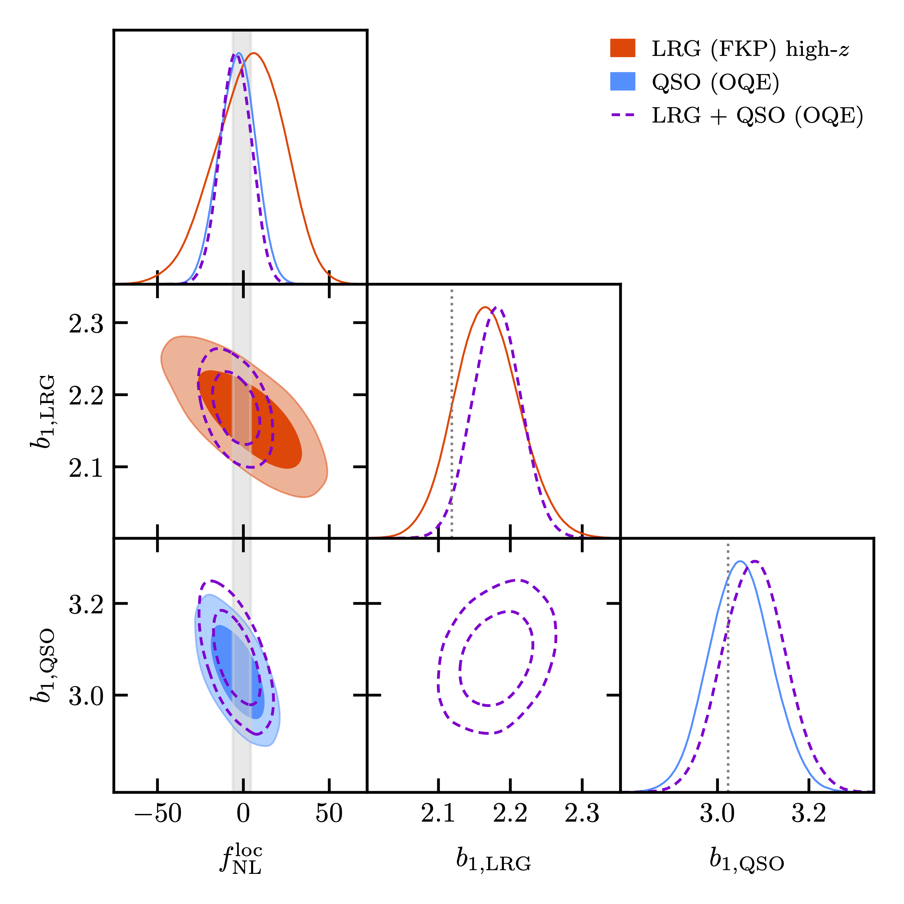
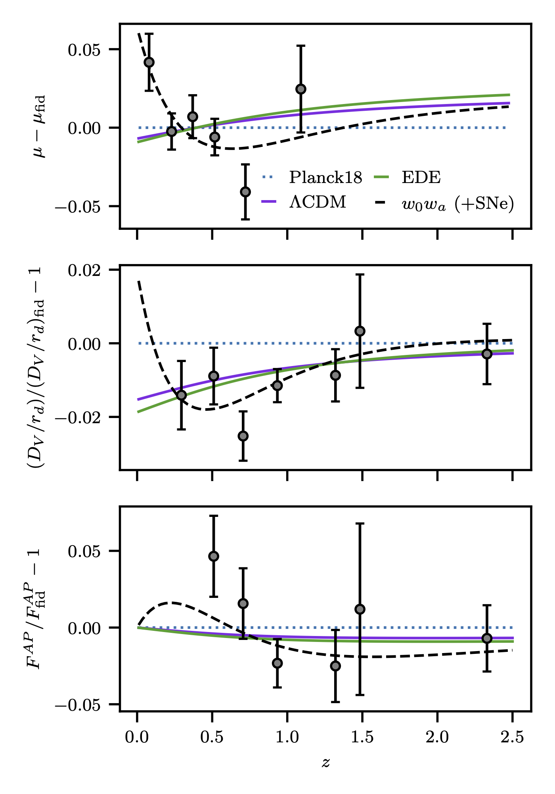
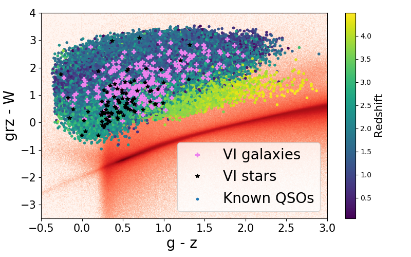

I published the state-of-the-art measurement of local PNG using galaxy survey [1] leading to the tightest constraint to date using galaxies. I dedicated the past 3 years to improve this measurement and be sure to mitigate any observational systematics. In particular, I developed a blinding strategy [2] that is applied by default in the DESI pipeline to avoid any confirmation bias when measuring the large-scale modes of the power spectrum. I was strongly involved in the clustering catalog pipeline of DESI [3,4], validating each step of the pipeline and improving the imaging systematic mitigation. Finally, I investigated alternative methodologies to constrain local PNG as the cross-correlation with the CMB lensing [5,6], the use of the density perturbation moments [7], or the inclusion of the cross-correlation between the different DESI tracers [8].
Highlights: [1] Chaussidon et al. 2025, [2] Chaussidon et al. 2024, [3] DESI Collaboration et al. 2024, [4] Ross et al. 2024, [5] Krolewski et al. 2023, [6] Chiarenza et al. 2026, [7] Vislosky et al. 2025, [8] Rosado-Marín et al. 2026

In prep.
Highlights: [1] Chaussidon et al. 2025, [2] Hotinli et al. 2025
Triggered by the new results from DESI BAO DR1 [3] (+1000 citations) and then DESI BAO DR2 [2] (+500 citations) indicating a potential detection of evolving dark energy, I worked, during my postdoc, on an alternative solution (early dark energy) [1] that modifies the physics before the recombination i.e. CBM was emitted, leading to an impactful publication (+38 citations in few months).
Highlights: [1] Chaussidon et al. 2025, [2] DESI Collaboration et al. 2025, [3] DESI Collaboration et al. 2024

During my Ph.D., I was in charge of the Quasar Target Selection of DESI [1] (+150 citations) overpassing the DESI scientific requirement by 20%. A particularly important role since the target selection is frozen for the entire main survey of DESI. I extensively analyze the targeted sample and its dependence on the imaging quality of the photometric survey used for the selection [3]. Finally, during the survey validation phase of DESI, I validated the quasar target selection by visually inspecting several hundreds of quasar spectra and improve their redshift classification by 10% [1,2].
Highlights: [1] Chaussidon et al. 2022, [2] Alexander et al. 2022, [3] Chaussidon et al. 2021,
